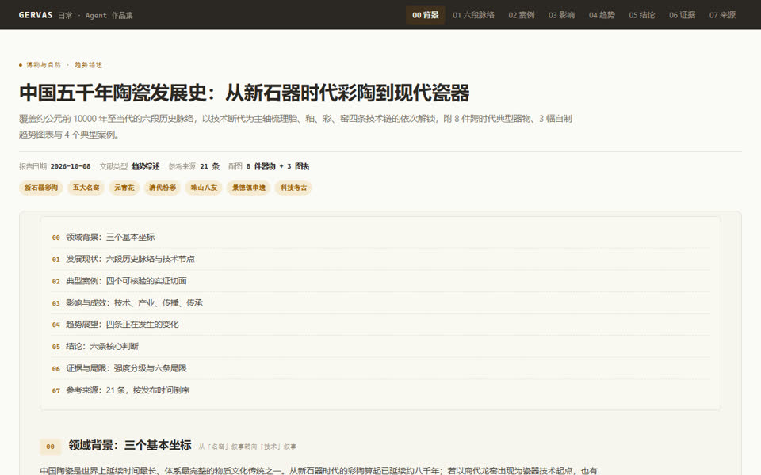

一个人在杭州，三年写下 815 篇笔记、做了 21 个工具，全部开源，全部可检索。
检索全部作品GERVAS
杭州 · 自 2023 年 10 月
最新一篇：第一性原理 · 2026-10-28
全部作品
815 篇按年倒排。点分类筛，按名字搜。
共 815 篇
没有匹配的作品。换个词，或点「全部」。
三年，写到现在
- 815
- 篇，累计著录。点开任何一篇都还在。
- 427
- 篇写于 2026 年，是三年里最多的一年。
- 1.41
- 篇每天，2026 年的日均。
- 9
- 类，从包装包材到本草与健康。
- 21
- 个工具，打开就能用。

关于这个站
- 在
- 杭州
- 自
- 2023 年 10 月
- 著录
- 815 篇
GERVAS 在杭州做包装采购，业余写 AI、建站和本草。这个站把他做过的事一件件写下来，能查、能点、能自己取。